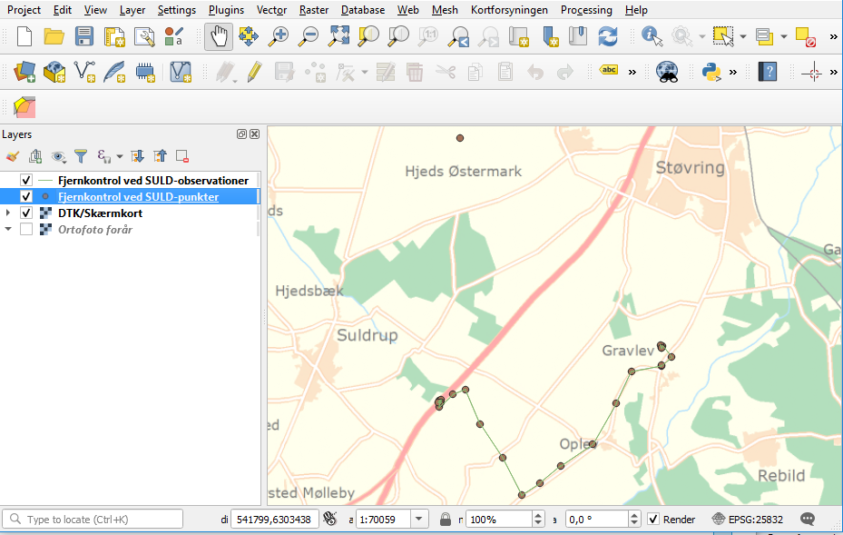

<!DOCTYPE html>
<html class="writer-html5" lang="dk" data-content_root="../">
<head>
  <meta charset="utf-8" /><meta name="viewport" content="width=device-width, initial-scale=1" />

  <meta name="viewport" content="width=device-width, initial-scale=1.0" />
  <title>Præsentation af FIRE &mdash; FIRE 1.10.0 documentation</title>
      <link rel="stylesheet" type="text/css" href="../_static/pygments.css?v=b86133f3" />
      <link rel="stylesheet" type="text/css" href="../_static/css/theme.css?v=e59714d7" />
      <link rel="stylesheet" type="text/css" href="../_static/graphviz.css?v=4ae1632d" />

  
      <script src="../_static/jquery.js?v=5d32c60e"></script>
      <script src="../_static/_sphinx_javascript_frameworks_compat.js?v=2cd50e6c"></script>
      <script src="../_static/documentation_options.js?v=3a14647b"></script>
      <script src="../_static/doctools.js?v=9bcbadda"></script>
      <script src="../_static/sphinx_highlight.js?v=dc90522c"></script>
      <script async="async" src="https://cdn.jsdelivr.net/npm/mathjax@3/es5/tex-mml-chtml.js"></script>
    <script src="../_static/js/theme.js"></script>
    <link rel="index" title="Index" href="../genindex.html" />
    <link rel="search" title="Search" href="../search.html" />
    <link rel="next" title="Case: Højdetidsserier" href="htscase.html" />
    <link rel="prev" title="Generelle kommandokald i linjen" href="kald.html" /> 
</head>

<body class="wy-body-for-nav"> 
  <div class="wy-grid-for-nav">
    <nav data-toggle="wy-nav-shift" class="wy-nav-side">
      <div class="wy-side-scroll">
        <div class="wy-side-nav-search" >

          
          
          <a href="../index.html" class="icon icon-home">
            FIRE
          </a>
<div role="search">
  <form id="rtd-search-form" class="wy-form" action="../search.html" method="get">
    <input type="text" name="q" placeholder="Search docs" aria-label="Search docs" />
    <input type="hidden" name="check_keywords" value="yes" />
    <input type="hidden" name="area" value="default" />
  </form>
</div>
        </div><div class="wy-menu wy-menu-vertical" data-spy="affix" role="navigation" aria-label="Navigation menu">
              <p class="caption" role="heading"><span class="caption-text">Contents:</span></p>
<ul class="current">
<li class="toctree-l1"><a class="reference internal" href="../konfiguration.html">Konfigurationsfil</a></li>
<li class="toctree-l1"><a class="reference internal" href="../installation.html">Installationsvejledning</a></li>
<li class="toctree-l1"><a class="reference internal" href="../datamodel.html">FIREs Datamodel</a></li>
<li class="toctree-l1"><a class="reference internal" href="../for_udviklere.html">Udviklingsguide</a></li>
<li class="toctree-l1"><a class="reference internal" href="../apps/index.html">Kommandolinjeprogrammer</a></li>
<li class="toctree-l1"><a class="reference internal" href="../tips/index.html">Tips og tricks</a></li>
<li class="toctree-l1"><a class="reference internal" href="../api/modules.html">API</a></li>
<li class="toctree-l1 current"><a class="reference internal" href="index.html">Workshop</a><ul class="current">
<li class="toctree-l2"><a class="reference internal" href="intro.html">Indledning</a></li>
<li class="toctree-l2"><a class="reference internal" href="kald.html">Generelle kommandokald i linjen</a></li>
<li class="toctree-l2 current"><a class="current reference internal" href="#">Præsentation af FIRE</a><ul>
<li class="toctree-l3"><a class="reference internal" href="#fire-info">fire info</a><ul>
<li class="toctree-l4"><a class="reference internal" href="#ovelse">Øvelse</a></li>
</ul>
</li>
<li class="toctree-l3"><a class="reference internal" href="#fire-niv">fire niv</a><ul>
<li class="toctree-l4"><a class="reference internal" href="#trin-1-opret-sag">Trin 1) opret-sag</a></li>
<li class="toctree-l4"><a class="reference internal" href="#trin-2-udtraek-revision">Trin 2) udtræk-revision</a></li>
<li class="toctree-l4"><a class="reference internal" href="#trin-3-ilaeg-revision">Trin 3) ilæg-revision</a></li>
<li class="toctree-l4"><a class="reference internal" href="#trin-4-ilaeg-nye-punkter">Trin 4) ilæg-nye-punkter</a></li>
<li class="toctree-l4"><a class="reference internal" href="#trin-5-laes-observationer">Trin 5) læs-observationer</a></li>
<li class="toctree-l4"><a class="reference internal" href="#trin-5a-udtraek-eksisterende-observationer-til-beregning">Trin 5a) Udtræk eksisterende observationer til beregning</a></li>
<li class="toctree-l4"><a class="reference internal" href="#trin-6-regn">Trin 6) regn</a></li>
<li class="toctree-l4"><a class="reference internal" href="#trin-7-ilaeg-observationer">Trin 7) ilæg-observationer</a></li>
<li class="toctree-l4"><a class="reference internal" href="#trin-8-ilaeg-nye-koter">Trin 8) ilæg-nye-koter</a></li>
<li class="toctree-l4"><a class="reference internal" href="#trin-9-luk-sag">Trin 9) luk-sag</a></li>
</ul>
</li>
</ul>
</li>
<li class="toctree-l2"><a class="reference internal" href="#visualisering-i-qgis">Visualisering i QGIS</a></li>
<li class="toctree-l2"><a class="reference internal" href="htscase.html">Case: Højdetidsserier</a></li>
</ul>
</li>
</ul>

        </div>
      </div>
    </nav>

    <section data-toggle="wy-nav-shift" class="wy-nav-content-wrap"><nav class="wy-nav-top" aria-label="Mobile navigation menu" >
          <i data-toggle="wy-nav-top" class="fa fa-bars"></i>
          <a href="../index.html">FIRE</a>
      </nav>

      <div class="wy-nav-content">
        <div class="rst-content">
          <div role="navigation" aria-label="Page navigation">
  <ul class="wy-breadcrumbs">
      <li><a href="../index.html" class="icon icon-home" aria-label="Home"></a></li>
          <li class="breadcrumb-item"><a href="index.html">Workshop</a></li>
      <li class="breadcrumb-item active">Præsentation af FIRE</li>
      <li class="wy-breadcrumbs-aside">
            <a href="../_sources/workshop/workshop.rst.txt" rel="nofollow"> View page source</a>
      </li>
  </ul>
  <hr/>
</div>
          <div role="main" class="document" itemscope="itemscope" itemtype="http://schema.org/Article">
           <div itemprop="articleBody">
             
  <section id="praesentation-af-fire">
<span id="workshop"></span><h1>Præsentation af FIRE<a class="headerlink" href="#praesentation-af-fire" title="Link to this heading"></a></h1>
<p>FIRE indeholder alt den relevante information, som refgeo gør. Der er punktnumre,
identer, skitser, koordinater, tidsserier, beskrivelse, afmærkningstyper osv. osv.
Strukturen er dog en helt anden og meget mere overskuelig og vedligeholdelsesvenlig
nede i maven på databasen, hvilket gør FIRE til en markant forbedring af et af
vores vigtigste dataarkiver.</p>
<p>Dog er alt vores nuværende udjævnings- og datahåndteringssoftware (fx. ADJ,
<code class="docutils literal notranslate"><span class="pre">valde</span></code> og <code class="docutils literal notranslate"><span class="pre">vedl.pl</span></code>) tilpasset refgeo og det famøse KMS-format, hvilket ikke kan
bruges i det nye setup.
Derfor har vi udviklet adskillige kommandolinjekald, som har til formål at lade
brugeren se ned i databasen, udtrække det data der er relevant, putte ny data
ned i databasen osv.
Det er en løbende opgave, hvor der bliver udviklet den funktionalitet, som viser
sig nødvendig og brugbar til et gentagent formål.</p>
<p>Hvis nogen havde håbet på en lækkert designet brugergrænseflade med søgebokse og
kasser, der kan hakkes af og en knap med <em>beregn</em> til til at lave en udjævning,
som derefter bliver vist i QGIS, så må vi skuffe.
Det er ikke der vi er; vi er slet ikke nok folk til at kunne retfærdiggøre at
bruge tid og penge på at udvikle sådan noget, og desuden vil det være et hejs at
vedligeholde og videreudvikle kode til, hvilket vi helst vil gøre selv.
Derfor er det altså stadig kommandolinjekald, som er vejen frem! Men dermed bliver
overgangen til ny database og beregningssoftware nok ikke så slem alligevel.</p>
<p>Nedenfor uddybes de funktionaliteter vi på nuværende tidspunkt har udviklet. Det er
alle underprogrammer (og under-underprogrammer) under <code class="docutils literal notranslate"><span class="pre">fire</span></code> og køres derfor ved
først at kalde <code class="docutils literal notranslate"><span class="pre">fire</span></code> efterfulgt af underkommandoens navn.</p>
<section id="fire-info">
<h2>fire info<a class="headerlink" href="#fire-info" title="Link to this heading"></a></h2>
<p>En grundliggende funktionalitet er at kunne se hvilken data, der ligger i databasen,
altså hvilken info man har i arkivet. Til det er der udviklet et kommandolinjeprogram
kaldet <code class="docutils literal notranslate"><span class="pre">fire</span> <span class="pre">info</span></code>. Man kan se hvad programmet indeholder ved at afvikle kommandoen
<code class="docutils literal notranslate"><span class="pre">fire</span> <span class="pre">info</span> <span class="pre">--help</span></code>:</p>
<div class="highlight-text notranslate"><div class="highlight"><pre><span></span>$ fire info --help
Usage: fire info [OPTIONS] COMMAND [ARGS]...

  Information om objekter i FIRE

Options:
  --help  Show this message and exit.

Commands:
  infotype      Information om en punktinformationstype.
  obstype       Information om en given observationstype.
  punkt         Vis al tilgængelig information om et fikspunkt.
  punktsamling  Information om en punktsamling.
  sag           Fremsøg information om en eller flere sager.
  sagsevent     Information om et sagsevent.
  srid          Information om et givent SRID (Spatial Reference ID).
</pre></div>
</div>
<p>Herfra ses fem forskellige kommandoer man kan bruge:</p>
<ul class="simple">
<li><p><code class="docutils literal notranslate"><span class="pre">infotype</span></code></p></li>
<li><p><code class="docutils literal notranslate"><span class="pre">obstype</span></code></p></li>
<li><p><code class="docutils literal notranslate"><span class="pre">punkt</span></code></p></li>
<li><p><code class="docutils literal notranslate"><span class="pre">sag</span></code></p></li>
<li><p><code class="docutils literal notranslate"><span class="pre">srid</span></code></p></li>
</ul>
<p>Hvis man ønsker at fremsøge et punkt og se hvilke oplysninger, der knytter sig
til det (som man før kunne med <code class="docutils literal notranslate"><span class="pre">valde</span></code>, eller Valdemar i tjenesten), kan man
fx taste <code class="docutils literal notranslate"><span class="pre">fire</span> <span class="pre">info</span> <span class="pre">punkt</span> <span class="pre">gi2010</span></code>. I udtrækket plottes diverse oplysninger om
punktet direkte på skærmen, som ses herunder:</p>
<div class="highlight-default notranslate"><div class="highlight"><pre><span></span><span class="p">(</span><span class="n">fire</span><span class="o">-</span><span class="n">dev</span><span class="p">)</span> <span class="n">C</span><span class="p">:</span>\<span class="n">dev</span>\<span class="n">fire</span>\<span class="n">docs</span><span class="o">&gt;</span><span class="n">fire</span> <span class="n">info</span> <span class="n">punkt</span> <span class="n">gi2010</span>

<span class="o">--------------------------------------------------------------------------------</span>
<span class="n">PUNKT</span> <span class="n">G</span><span class="o">.</span><span class="n">I</span><span class="mf">.2010</span>
<span class="o">--------------------------------------------------------------------------------</span>
  <span class="n">Lokation</span>                    <span class="n">POINT</span> <span class="p">(</span><span class="mf">11.1425084856365</span> <span class="mf">55.3252167385718</span><span class="p">)</span>
  <span class="n">Oprettelsesdato</span>             <span class="mi">1985</span><span class="o">-</span><span class="mi">03</span><span class="o">-</span><span class="mi">19</span> <span class="mi">01</span><span class="p">:</span><span class="mi">11</span><span class="p">:</span><span class="mi">00</span>
 <span class="o">-</span><span class="n">AFM</span><span class="p">:</span><span class="mi">4999</span>                    <span class="n">Ukendt</span><span class="o">.</span>
 <span class="o">-</span><span class="n">AFM</span><span class="p">:</span><span class="mi">1700</span>                    <span class="n">Præcisionsnivellementspunkt</span><span class="o">.</span>
  <span class="n">AFM</span><span class="p">:</span><span class="mi">1704</span>                    <span class="n">Messingbolt</span> <span class="n">i</span> <span class="n">granitpostament</span><span class="o">.</span>
 <span class="o">-</span><span class="n">AFM</span><span class="p">:</span><span class="n">horisontal</span>
  <span class="n">AFM</span><span class="p">:</span><span class="n">horisontal</span>
  <span class="n">AFM</span><span class="p">:</span><span class="n">højde_over_terræn</span>       <span class="o">-</span><span class="mf">1.4</span>
  <span class="n">ATTR</span><span class="p">:</span><span class="n">restricted</span>
 <span class="o">-</span><span class="n">ATTR</span><span class="p">:</span><span class="n">beskrivelse</span>            <span class="n">G</span><span class="o">.</span><span class="n">I</span><span class="mf">.2010</span>
 <span class="o">-</span><span class="n">ATTR</span><span class="p">:</span><span class="n">beskrivelse</span>            <span class="n">G</span><span class="o">.</span><span class="n">I</span><span class="mf">.2010</span>
                              <span class="n">Korsør</span> <span class="n">By</span><span class="o">.</span>
                              <span class="n">Kjærsvej</span> <span class="mf">2.</span>
                              <span class="n">Punkt</span> <span class="n">i</span> <span class="n">S</span><span class="o">.</span> <span class="k">del</span> <span class="n">af</span> <span class="n">kirkegårdens</span> <span class="n">planteskole</span><span class="o">.</span>
 <span class="o">-</span><span class="n">ATTR</span><span class="p">:</span><span class="n">beskrivelse</span>            <span class="n">G</span><span class="o">.</span><span class="n">I</span><span class="mf">.2010</span><span class="o">.</span>
                              <span class="n">Korsør</span> <span class="n">By</span><span class="o">.</span>
                              <span class="n">Kjærsvej</span> <span class="mf">2.</span>
                              <span class="n">Punkt</span> <span class="n">i</span> <span class="n">brønd</span> <span class="n">med</span> <span class="n">dæksel</span><span class="p">,</span> <span class="n">i</span> <span class="n">S</span><span class="o">.</span> <span class="k">del</span>
                              <span class="n">af</span> <span class="n">kirkegårdens</span> <span class="n">materialplads</span><span class="o">.</span>
                              <span class="n">Dæksel</span> <span class="n">til</span> <span class="n">terræn</span><span class="o">.</span>
  <span class="n">ATTR</span><span class="p">:</span><span class="n">beskrivelse</span>            <span class="n">G</span><span class="o">.</span><span class="n">I</span><span class="mf">.2010</span><span class="o">.</span>
                              <span class="n">Korsør</span> <span class="n">Kirkegård</span><span class="o">.</span>
                              <span class="n">Punkt</span> <span class="n">i</span> <span class="n">brønd</span> <span class="n">med</span> <span class="n">dæksel</span><span class="p">,</span>
                              <span class="n">i</span> <span class="n">lille</span> <span class="n">jordstykke</span> <span class="n">til</span> <span class="n">planteopdræt</span><span class="o">.</span>
                              <span class="n">Dæksel</span> <span class="n">til</span> <span class="n">terræn</span><span class="o">.</span>
  <span class="n">ATTR</span><span class="p">:</span><span class="n">højdefikspunkt</span>
  <span class="n">ATTR</span><span class="p">:</span><span class="n">tinglysningsnr</span>         <span class="n">Sagsnummer</span> <span class="n">fra</span> <span class="n">Tingbogen</span> <span class="n">ikke</span> <span class="n">tilgængeligt</span><span class="o">.</span> <span class="n">Opdatering</span> <span class="n">udestår</span><span class="o">.</span>
 <span class="o">-</span><span class="n">ATTR</span><span class="p">:</span><span class="n">bemærkning</span>             <span class="n">Punkt</span> <span class="n">oprettet</span>
 <span class="o">-</span><span class="n">ATTR</span><span class="p">:</span><span class="n">bemærkning</span>             <span class="n">Rev</span><span class="o">.</span> <span class="n">beskr</span><span class="o">.</span> <span class="n">uge</span> <span class="mi">31</span> <span class="mi">2003</span> <span class="n">Ole</span> <span class="n">E</span><span class="o">.</span>
 <span class="o">-</span><span class="n">ATTR</span><span class="p">:</span><span class="n">bemærkning</span>             <span class="n">Rev</span><span class="o">.</span> <span class="mi">1971</span> <span class="n">af</span> <span class="n">Stæhr</span> <span class="n">Madsen</span><span class="o">.</span>
  <span class="n">ATTR</span><span class="p">:</span><span class="n">bemærkning</span>             <span class="n">Rev</span><span class="o">.</span> <span class="n">uge</span> <span class="mi">18</span> <span class="mi">2017</span> <span class="n">PN</span><span class="o">.</span>
  <span class="n">NET</span><span class="p">:</span><span class="n">jessen</span>
  <span class="n">REGION</span><span class="p">:</span><span class="n">DK</span>
  <span class="n">SKITSE</span><span class="p">:</span><span class="n">png_sti</span>              <span class="n">skitser_png</span><span class="o">/</span><span class="n">K</span><span class="o">-</span><span class="mi">11</span><span class="o">-</span><span class="mf">09263_1.</span><span class="n">png</span>
  <span class="n">SKITSE</span><span class="p">:</span><span class="n">png_md5</span>              <span class="mi">61</span><span class="n">c0d3e31274e889b4c627d455bee5d8</span>
  <span class="n">SKITSE</span><span class="p">:</span><span class="n">master_sti</span>           <span class="n">skitser_master</span><span class="o">/</span><span class="n">K</span><span class="o">-</span><span class="mi">11</span><span class="o">-</span><span class="mf">09263_1.</span><span class="n">cgm</span>
  <span class="n">SKITSE</span><span class="p">:</span><span class="n">master_md5</span>           <span class="mi">49</span><span class="n">d8bc56b63d71122a9f1cfc95975ffb</span>
  <span class="n">NET</span><span class="p">:</span><span class="n">DVR90</span>
  <span class="n">IDENT</span><span class="p">:</span><span class="n">refgeo_id</span>             <span class="mi">11122</span>
  <span class="n">IDENT</span><span class="p">:</span><span class="n">landsnr</span>               <span class="n">K</span><span class="o">-</span><span class="mi">11</span><span class="o">-</span><span class="mi">09263</span>
  <span class="n">IDENT</span><span class="p">:</span><span class="n">GI</span>                    <span class="n">G</span><span class="o">.</span><span class="n">I</span><span class="mf">.2010</span>
  <span class="n">IDENT</span><span class="p">:</span><span class="n">ekstern</span>               <span class="mi">9904</span><span class="o">/</span><span class="mi">14510</span>
  <span class="n">IDENT</span><span class="p">:</span><span class="n">jessen</span>                <span class="mi">81041</span>

<span class="o">---</span> <span class="n">KOORDINATER</span> <span class="o">---</span>
<span class="o">*</span> <span class="mi">2000</span><span class="o">-</span><span class="mi">02</span><span class="o">-</span><span class="mi">11</span> <span class="mi">14</span><span class="p">:</span><span class="mi">30</span>  <span class="n">EPSG</span><span class="p">:</span><span class="mi">5799</span>       <span class="n">n</span> <span class="mf">8.49270</span> <span class="p">(</span><span class="mi">4</span><span class="p">)</span>
<span class="o">*</span> <span class="mi">2011</span><span class="o">-</span><span class="mi">12</span><span class="o">-</span><span class="mi">24</span> <span class="mi">01</span><span class="p">:</span><span class="mi">00</span>  <span class="n">EPSG</span><span class="p">:</span><span class="mi">4258</span>       <span class="n">n</span> <span class="mf">11.1424517702</span><span class="p">,</span> <span class="mf">55.3252437011</span> <span class="p">(</span><span class="mi">200</span><span class="p">,</span> <span class="mi">200</span><span class="p">)</span>
<span class="o">*</span> <span class="mi">2000</span><span class="o">-</span><span class="mi">02</span><span class="o">-</span><span class="mi">11</span> <span class="mi">14</span><span class="p">:</span><span class="mi">30</span>  <span class="n">DK</span><span class="p">:</span><span class="n">HPOT_DVR90</span>   <span class="n">n</span> <span class="mf">8.33590</span> <span class="p">(</span><span class="mi">4</span><span class="p">)</span>
<span class="o">*</span> <span class="mi">1999</span><span class="o">-</span><span class="mi">04</span><span class="o">-</span><span class="mi">29</span> <span class="mi">16</span><span class="p">:</span><span class="mi">00</span>  <span class="n">DK</span><span class="p">:</span><span class="n">GI44</span>         <span class="n">n</span> <span class="mf">8.56610</span> <span class="p">(</span><span class="mi">5</span><span class="p">)</span>
</pre></div>
</div>
<div class="admonition note">
<p class="admonition-title">Note</p>
<p>Det er ligegyldigt om der skrives med stort eller småt eller om der
benyttes punktummer eller ej i argumentet. Dog skal der være bindestreg
mellem herred, sogn og løbenummer.</p>
</div>
<p>Udtrækket viser den formodede relevante information, der ligger på punktet fra
attribut-tabellerne og fra koordinattabellerne.
I eksemplet ses det fx, at punktet</p>
<ul class="simple">
<li><p>er oprettet i databasen 19/3 1985,</p></li>
<li><p>også hedder K-11-09263,</p></li>
<li><p>i øvrigt er et Jessenpunkt til en tidsserie,</p></li>
<li><p>har en DVR90-kote fra 3. præcisionsnivellement indikeret ved EPSG-kode 5799
og beregningstidspunkt 11/2-2000 kl. 13:30,</p></li>
<li><p>har en plankoordinat fra 2011 (med EPSG-koden 4258) og to andre
koordinater i andre net.
<strong>Stjerne (eller farven grøn) indikerer at koordinaten er den gældende for det pågældende net.</strong></p></li>
</ul>
<p>På samme måde kan andre elementer slås op i databasen, bl.a. oplysninger om historiske
koter med parameteren <code class="docutils literal notranslate"><span class="pre">-K</span></code>, observationer med parameteren <code class="docutils literal notranslate"><span class="pre">-O</span></code> og andre detaljer med
parameteren <code class="docutils literal notranslate"><span class="pre">-D</span></code>.</p>
<section id="ovelse">
<h3>Øvelse<a class="headerlink" href="#ovelse" title="Link to this heading"></a></h3>
<p>Prøv selv at fremsøge mere info, fx:</p>
<ol class="arabic simple">
<li><p>alle observationer fra et givent punkt</p></li>
<li><p>alle historiske koordinater for et punkt</p></li>
<li><p>tekstbeskrivelsen på attributten AFM:2701</p></li>
<li><p>alle aktive sager i databasen</p></li>
</ol>
</section>
</section>
<section id="fire-niv">
<h2>fire niv<a class="headerlink" href="#fire-niv" title="Link to this heading"></a></h2>
<p>Der er blevet udviklet et kommandolinjeprogram til udjævningsberegning kaldet <code class="docutils literal notranslate"><span class="pre">niv</span></code>.
Læs om hvordan programmet kaldes <a class="reference internal" href="../apps/niv.html#kommandolinjeprogrammer-niv"><span class="std std-ref">her</span></a></p>
<p>Med dette program kan hele produktionslinjen køres; fra dataudtræk, revision, beregning,
til ilægning af resultat og generering af afsluttende rapport til kunde. Se mere ved
at køre kommandoen <code class="docutils literal notranslate"><span class="pre">fire</span> <span class="pre">niv</span> <span class="pre">--help</span></code>:</p>
<div class="highlight-text notranslate"><div class="highlight"><pre><span></span>$ fire niv --help
Usage: fire niv [OPTIONS] COMMAND [ARGS]...

  Nivellement: Arbejdsflow, beregning og analyse

  Underkommandoerne:

      opret-sag
      udtræk-revision
      ilæg-revision
      ilæg-nye-punkter
      læs-observationer
      regn
      ilæg-observationer
      ilæg-nye-koter
      luk-sag

  definerer, i den anførte rækkefølge, nogenlunde arbejdsskridtene i et
  almindeligt opmålingsprojekt.

  Til beregning af eksisterende observationer, findes en alternativ
  underkommando til `læs-observationer`, kaldet `udtræk-observationer`. En
  arbejdsgang med denne kommando kan se ud på følgende måde:

      opret-sag
      udtræk-observationer
      regn
      luk-sag
  
  Underkommandoer
  ---------------

  OPRET-SAG registrerer sagen (projektet) i databasen og skriver det regneark,
  som bruges til at holde styr på arbejdet.

  UDTRÆK-REVISION udtrækker oversigt over eksisterende punkter i et område,
  til brug for punktrevision (herunder registrering af tabtgåede punkter).

  ILÆG-REVISION lægger opdaterede og nye punktattributter i databasen efter
  revision.

  ILÆG-NYE-PUNKTER lægger oplysninger om nyoprettede punkter i databasen, og
  tildeler bl.a. landsnumre til punkterne.

  LÆS-OBSERVATIONER læser råfilerne og skriver observationerne til regnearket
  så de er klar til brug i beregninger.

  UDTRÆK-OBSERVATIONER henter observationer ud af databasen på baggrund af
  udvalgte søgekriterier og skrives til regnearket, så de kan bruges i
  beregninger.

  REGN beregner nye koter til alle punkter, og genererer rapporter og
  visualiseringsmateriale.

  ILÆG-OBSERVATIONER lægger nye observationer i databasen.

  ILÆG-NYE-KOTER lægger nyberegnede koter i databasen.

  LUK-SAG arkiverer det afsluttende regneark og sætter sagens status til
  inaktiv.

  Eksempel
  --------

      fire niv opret-sag andeby_2020 &quot;Vedligehold Andeby&quot;

      fire niv udtræk-revision andeby_2020 K-99 102-08

      fire niv ilæg-revision andeby_2020

      fire niv ilæg-nye-punkter andeby_2020

      fire niv læs-observationer andeby_2020

      fire niv regn andeby_2020     &lt;- kontrolberegning

      fire niv regn andeby_2020     &lt;- endelig beregning

      fire niv ilæg-observationer andeby_2020

      fire niv ilæg-nye-koter andeby_2020

      fire niv luk-sag andeby_2020

Options:
  --help  Show this message and exit.

Commands:
  fjern-punkt-fra-punktsamling  Fjern et punkt fra en punktsamling
  ilæg-nye-koter                Registrer nyberegnede koter i databasen.
  ilæg-nye-punkter              Registrer nyoprettede punkter i databasen.
  ilæg-observationer            Registrer nye observationer i databasen.
  ilæg-punktsamling             Registrer nye eller redigerede...
  ilæg-revision                 Læg reviderede punktdata i databasen.
  ilæg-tidsserie                Registrer nye eller redigerede...
  luk-sag                       Luk sag i databasen.
  læs-observationer             Importer data fra observationsfiler og...
  netoversigt                   Opbyg netoversigt og beregn lukkesummer
  opret-punktsamling            Opretter et Punktsamlings-ark på sagen,...
  opret-sag                     Registrer ny sag i databasen.
  regn                          Beregn nye koter.
  udtræk-observationer          Udtræk nivellement-observationer for et...
  udtræk-punktsamling           Udtræk en eller flere punktsamlinger fra...
  udtræk-revision               Gør klar til punktrevision: Udtræk...
  åbn-sag                       Åbn en lukket sag i databasen.
</pre></div>
</div>
<p>Alt datahåndtering foregår på Windows og i Excel-regneark med diverse faneblade.
Vi vil nedenfor gennemgå processen.</p>
<div class="admonition note">
<p class="admonition-title">Note</p>
<p>Sørg for at bruge små bogstaver. Kald og parametre genkendes ikke med versaler.
Undtagelsen er ved punktnumre; her kan både store og små bogstaver benyttes.</p>
</div>
<p>I de følgende afsnit beskrives de enkelte delprogrammer under <cite>fire niv</cite>. De vises i
en idealiseret rækkefølge, der følger arbejdsgangene i forbindelse med revision af
kommunale fikspunkter. I praksis kan programmerne afvikles i forskellig rækkefølge,
eller helt udelades, alt efter behov.</p>
<p>Først gennemgås det klassiske forløb, dernæst kommer et eksempel på udtræk af
eksisterende observationer med <code class="docutils literal notranslate"><span class="pre">udtræk-observationer</span></code>.</p>
<section id="trin-1-opret-sag">
<h3>Trin 1) opret-sag<a class="headerlink" href="#trin-1-opret-sag" title="Link to this heading"></a></h3>
<p>I <code class="docutils literal notranslate"><span class="pre">fire</span></code> har vi valgt at knytte al beregning og fikspunkthåndtering op på såkaldte
<em>sagsevents</em>. Det vil sige at når man går igang med et nyt projekt, fx. en opgave
omhandlende opmåling og beregning af lokal vandstand i Havnebyen, så opretter man
en sag til denne opgave, hvori alt ens dataudtræk, observationer, beregninger og
endelige resultater bliver registreret på. Kaldet, der skal køres under <code class="docutils literal notranslate"><span class="pre">fire</span> <span class="pre">niv</span></code>
for at oprette en ny sag, hedder, passende nok, <code class="docutils literal notranslate"><span class="pre">opret-sag</span></code>. Lad os prøve at få
mere hjælp:</p>
<blockquote>
<div><div class="highlight-text notranslate"><div class="highlight"><pre><span></span>$ fire niv opret-sag --help
Usage: fire niv opret-sag [OPTIONS] PROJEKTNAVN [BESKRIVELSE]...

  Registrer ny sag i databasen.

Options:
  --db [prod|test]      Vælg en specifik databaseforbindelse -
                        default_connection i fire.ini bruges hvis intet
                        vælges.
  -m, --monokrom        Vis ikke farver i terminalen
  --debug               Vis debug output fra FIRE-databasen.
  --help                Vis denne hjælp tekst
  --sagsbehandler TEXT  Angiv andet brugernavn end den aktuelt indloggede
</pre></div>
</div>
</div></blockquote>
<p>Her kommer en beskrivelse af hvad der forventes af input:</p>
<ul class="simple">
<li><p>Options: Valgfrit. Valgmuligheder ses i hjælpeteksten.</p></li>
<li><p>Projektnavn: Obligatorisk. Kan fx være <code class="docutils literal notranslate"><span class="pre">Fjernkontrol_af_SULD</span></code>. Dette bliver navnet
på dit regneark.</p></li>
<li><p>Beskrivelse: Valgfrit, men en god idé at beskrive nærmere hvad sagen indeholder,
fx &quot;Nivellement af skruepløkke samt lodrette bolte ved SULD samt fjernkontrol til
5D-punktet GRAV. Antenne IKKE opført.&quot;</p></li>
</ul>
<div class="admonition note">
<p class="admonition-title">Note</p>
<p>Hvis input består af flere ord, fx i projektnavn eller beskrivelse, skal
disse indkaples i citationstegn (&quot; &quot;). Det anbefales dog IKKE at lave mellemrum
i projektnavne.</p>
</div>
<p>I terminalen vil det se ud som dette, når der oprettes en sag:</p>
<div class="highlight-default notranslate"><div class="highlight"><pre><span></span>(fire) C:\&gt;fire niv opret-sag Fjernkontrol_af_SULD &quot;Nivellement af skruepløkke og lodrette bolte ved SULD samt fjernkontrol til 4D-punktet GRAV. Antenne IKKE opført&quot;
Sags/projekt-navn: Fjernkontrol_af_SULD  (aef7ae59-e2fd-4c5d-9bc1-99bc7ad82bb9)
Sagsbehandler:     B012349
Beskrivelse:       Nivellement af skruepløkke og lodrette bolte ved SULD samt fjernkontrol til 4D-punktet GRAV. Antenne IKKE opført
Opretter ny sag i test-databasen - er du sikker?  (ja/NEJ):
ja
Gentag svar for at bekræfte (ja/NEJ)
ja
Sag &#39;Fjernkontrol_af_SULD&#39; oprettet
Skriver sagsregneark &#39;Fjernkontrol_af_SULD.xlsx&#39;
Filen &#39;Fjernkontrol_af_SULD.xlsx&#39; findes ikke.
Skriver: {&#39;Notater&#39;, &#39;Filoversigt&#39;, &#39;Sagsgang&#39;, &#39;Projektforside&#39;, &#39;Nyetablerede punkter&#39;, &#39;Parametre&#39;}
Til filen &#39;Fjernkontrol_af_SULD.xlsx&#39;
Færdig! - åbner regneark for check.
</pre></div>
</div>
<p>Det ses, at der kommer en advarsel op. Da alt hvad der oprettes i databasen ikke
kan slettes, er det en god idé at dobbelttjekke alt info man skriver til databasen.
Hvis man er sikker på sit input, kan man svare <em>&quot;ja&quot;</em> til spørgsmålet. Hvis der svares
alt andet, vil der ikke blive oprettet en sag i databasen.</p>
<p>Skrives der alt andet end <em>&quot;ja&quot;</em>, får man valget om der alligevel skal oprettes
sagsregneark (også kaldet projektfil). Hertil kan der svares <em>&quot;ja&quot;</em>, og et excel-ark
med filnavn som projektnavn oprettes i den mappe man kører kaldet i.</p>
<div class="highlight-default notranslate"><div class="highlight"><pre><span></span>(fire) C:\&gt;fire niv opret-sag Fjernkontrol_af_SULD2
Sags/projekt-navn: Fjernkontrol_af_SULD2  (b87e15e0-b0db-4388-9476-09d496ec0906)
Sagsbehandler:     B012349
Beskrivelse:
Opretter ny sag i test-databasen - er du sikker?  (ja/NEJ):
nej
Opretter IKKE sag
Opret sagsregneark alligevel? (ja/NEJ):
ja
Skriver sagsregneark &#39;Fjernkontrol_af_SULD2.xlsx&#39;
Filen &#39;Fjernkontrol_af_SULD2.xlsx&#39; findes ikke.
Skriver: {&#39;Projektforside&#39;, &#39;Parametre&#39;, &#39;Filoversigt&#39;, &#39;Nyetablerede punkter&#39;, &#39;Notater&#39;, &#39;Sagsgang&#39;}
Til filen &#39;Fjernkontrol_af_SULD2.xlsx&#39;
Færdig! - åbner regneark for check.
</pre></div>
</div>
<p>Excel-arket åbnes, og der ses seks faneblade:</p>
<ul class="simple">
<li><p>Projektside: Her kan man løbende indtaste relevant info for projektet.</p></li>
<li><p>Sagsgang: Her vil sagens hændelser fremgå, efterhånden som de forekommer.</p></li>
<li><p>Nyetablerede punkter: Her kan man indtaste de nye punkter, som er oprettet til
projektet.</p></li>
<li><p>Notater</p></li>
<li><p>Filoversigt: Her kan man indtaste filnavnene på opmålingsfilerne. husk at definere
stien, hvis ikke filen ligger samme sted som projektfilen.</p></li>
<li><p>Parametre</p></li>
</ul>
<p>Hvert faneblad kan nu redigeres til det formål man ønsker.</p>
<div class="admonition note">
<p class="admonition-title">Note</p>
<p>Når man laver sit kommandokald, skal man sikre sig der ikke eksisterer et
projekt med det navn allerede, ellers vil <code class="docutils literal notranslate"><span class="pre">fire</span></code> brokke sig. <code class="docutils literal notranslate"><span class="pre">fire</span></code> kan ligeledes
ikke skrive til et allerede åbent excel-ark.</p>
</div>
<p>Herfra kan man nu vælge at fortsætte til Trin 2 og foretage revisions-arbejde med
nye data, eller gå til Trin 5a, hvor man udtrækker eksisterende observationer til
regnearket baseret på en række søgekriterier, geometrifiler eller identer.</p>
</section>
<section id="trin-2-udtraek-revision">
<h3>Trin 2) udtræk-revision<a class="headerlink" href="#trin-2-udtraek-revision" title="Link to this heading"></a></h3>
<div class="admonition note">
<p class="admonition-title">Note</p>
<p>Dette trin kan springes over, såfremt man kun skal lave en beregning.</p>
</div>
<p>Når vi er ude at tilse punkter, fx ifm. den kommunale punktrevision, kontrolleres det
at punktets attributter (beskrivelse, lokation, bolttype osv.) er korrekt; hvis ikke
skal de rettes til.
Til det formål kan man kalde en kommando, der hedder <code class="docutils literal notranslate"><span class="pre">udtræk-revision</span></code> under
<code class="docutils literal notranslate"><span class="pre">fire</span> <span class="pre">niv</span></code>:</p>
<div class="highlight-text notranslate"><div class="highlight"><pre><span></span>$ fire niv udtræk-revision --help
Usage: fire niv udtræk-revision [OPTIONS] PROJEKTNAVN KRITERIER...

  Gør klar til punktrevision: Udtræk eksisterende information.

  Programmets primære funktion er at udtrække fikspunktsinformationer i
  forbindelse med punktrevision i kommunale vedligeholdsopgaver, men det kan
  også bruges til at redigere fikspunktsoplysninger og tilføje nye punkter og
  koordinater.

  Fikspunktsinformation udtrækkes ved at angive enten navne på
  opmålingsdistrikter eller individuelle punkter, eksempelvis::

      fire niv udtræk-revision SAG K-63 103-03 SKEJ RDO1

  De udtrukne punkter og tilhørende informationer er da at finde i et nyt
  regneark kaldet ``SAG-revision.xlsx``. Regnearket har kolonner med
  overskrifterne &quot;Punkt&quot;, &quot;Attribut&quot;, &quot;Talværdi&quot;, &quot;Tekstværdi&quot;, &quot;Sluk&quot;, &quot;Ny
  værdi&quot;, &quot;Id&quot; og &quot;Ikke besøgt&quot;. For hvert punkt grupperes de tilknyttede
  informationer i blokke af rækker. &quot;Attribut&quot;, &quot;Talværdi&quot; og &quot;Tekstværdi&quot;
  udfyldes med de relevante data. For at lette efterfølgende
  redigeringsarbejde er tekstværdier også at finde som kopi i &quot;Ny værdi&quot;, da
  mange revisionsopdateringer kun kræver småjusteringer af eksisterende
  information.

  Ved udtræk af punkter via opmålingsdistrikt frasorteres punkter, der i
  udgangspunktet er irrelevante i en punktrevision. Det drejer sig om punkter,
  der har en eller flere af følgende tilknyttede attributter:

      ATTR:hjælpepunkt``
      ATTR:tabtgået``
      ATTR:teknikpunkt
      ATTR:MV_punkt

  Derudover frasorteres også punkter med en regionskode der ikke er dansk, fx
  REGION:SJ.

  Visse attributter gemmes ikke i regnearket da de sjældent skal ændres og
  primært er støj i punktrevisionsøjemed. Det er dog muligt at få dem med i
  udtrækket ved brug af ``--alle-attributter``.

  Attributrækker hvor der er sat et &quot;x&quot; i &quot;Sluk&quot;-kolonnen er ikke oprettede i
  databasen og skal betragtes som genveje til hurtig oprettelse af disse
  attributter i forbindelse indlæsning af revisionsændringerne. Bemærk også at
  &quot;Id&quot;-kolonnen er tom for disse rækker, hvilket betyder at attributten ikke
  findes i databasen.

Options:
  --db [prod|test]    Vælg en specifik databaseforbindelse -
                      default_connection i fire.ini bruges hvis intet vælges.
  -m, --monokrom      Vis ikke farver i terminalen
  --debug             Vis debug output fra FIRE-databasen.
  --help              Vis denne hjælp tekst
  --alle-attributter  Inkludér alle attributter
</pre></div>
</div>
<p>Det ses man skal definere to parametre:</p>
<ul class="simple">
<li><p>Projektnavn: Som defineret i <code class="docutils literal notranslate"><span class="pre">opret-sag</span></code>. Indkapslet i &quot; &quot;</p></li>
<li><p>Kriterier: Enten ident eller opmålingsmålingsdistrikt. Her kan man fx. skrive 61-07 61-03 G.I.902 BUDP</p></li>
</ul>
<p>I terminalen vil det se ud som følger:</p>
<div class="highlight-default notranslate"><div class="highlight"><pre><span></span>(fire) C:\&gt;fire niv udtræk-revision Fjernkontrol_af_SULD 61-07 61-03 63-10
Punkt: 61-01-00008
Punkt: 61-03-00001
Punkt: 61-03-00002
Punkt: 61-03-00003
Punkt: 61-03-00010
Punkt: 61-03-00801
...
Punkt: 63-10-09081
Punkt: 63-10-09082
Punkt: 63-10-09084
Skriver: {&#39;Revision&#39;}
Til filen &#39;Fjernkontrol_af_SULD-revision.xlsx&#39;
Overskriver fanebladene {&#39;Revision&#39;}
    med opdaterede versioner.
Foregående versioner beholdes i &#39;ex&#39;-filen &#39;Fjernkontrol_af_SULD-revision-ex.xlsx&#39;
Færdig!
</pre></div>
</div>
<p>hvorefter punkterne udtrækkes og lægges i en ny excel-fil navngivet med
&quot;projektnavn&quot;-revision.xlsx. Format er som vist nedenfor:</p>
<a class="reference internal image-reference" href="../_images/firenivudtrækrevision.PNG">
</a>
<p>I dette ark kan man nu rette attributterne til efter behov. Nedenfor er vist:</p>
<ol class="arabic simple">
<li><p>ændring i lokationskoordinaten (<em>LOKATION</em>)</p></li>
<li><p>rettelser for punkt 61-01-00008 i attributterne <em>ATTR:beskrivelse</em>,
<em>AFM:højde_over_terræn</em> og <em>ATTR:bemærkning</em>.</p></li>
<li><p>at punktet nu er et restricted punkt (<em>ATTR:restricted</em>) og dens GNSS-egnethed (<em>ATTR:gnss_egnet</em>)</p></li>
<li><p>at punktet er besøgt ved at fjerne kryds i kolonnen <em>Ikke besøgt</em></p></li>
</ol>
<a class="reference internal image-reference" href="../_images/firenivudtrækrevision2.PNG">
</a>
<div class="admonition note">
<p class="admonition-title">Note</p>
<p>Attributter MED id indikerer at oplysningen er gemt og udtrukket fra
databasen. Attributter UDEN id er endnu ikke oprettet i databasen.</p>
</div>
<p>Ved revision af mange punkter, er der oprettet en overblikskolonne, <em>Ikke besøgt</em>.
Denne er født med et kryds ud for punktbeskrivelsen, da man derved kan tilføje excels
filterfunktion, og filtrere de rækker væk uden et kryds. Pas på med ikke at <em>sortere</em>,
da rækkerne så vil blive blandet. Efter filtrering kan man let se hvilke punkter man
endnu ikke har været forbi... såfremt man husker at slette krydset fra de punkter man
allerede HAR besøgt.</p>
</section>
<section id="trin-3-ilaeg-revision">
<h3>Trin 3) ilæg-revision<a class="headerlink" href="#trin-3-ilaeg-revision" title="Link to this heading"></a></h3>
<div class="admonition note">
<p class="admonition-title">Note</p>
<p>Dette trin kan springes over, såfremt man kun skal lave en beregning.</p>
</div>
<p>Ændringer lavet i revisionsregnearket i trin 3 ovenfor lægges i databasen
med kommandoen <cite>fire niv ilæg-revision</cite>.</p>
<div class="highlight-text notranslate"><div class="highlight"><pre><span></span>$ fire niv ilæg-revision --help
Usage: fire niv ilæg-revision [OPTIONS] PROJEKTNAVN [BEMÆRKNING]...

  Læg reviderede punktdata i databasen.

  Ændringer i revisionsregnearket, udtrukket med ``fire niv udtræk-revision``,
  lægges i databasen med dette program. Programmet understøtter primært
  punktrevision som en del af kommunalt vedligehold, men også mere avancerede
  brugsscenarier understøttes. De typiske ændringer i en revision er
  tilføjelse, ændring eller fjernelse af en attribut, samt opdatering af
  lokationskoordinater. Herudover er det også muligt at oprette nye punkter og
  koordinater.

  Revisionsregnearket er struktureret så punkter og tilhørende attributter
  grupperes sammen i blokke af rækker. Hver blok separeres af nogle tommer
  rækker. Første række i en blok adskiller sig fra de resterende, da den
  indeholder punktets primære ident, lokationskoordinat og har i et
  nyudtrukket revisionsark &quot;x&quot; i kolonnen &quot;Ikke besøgt&quot;. Hver række i en blok
  tilsvarer et objekt i databasen. I kolonnen &quot;Attribut&quot; angives hvilken type
  objekt der er tale om og hører en værdi med til denne attribut er den
  angivet i enten &quot;tal-&quot; eller &quot;tekstværdi&quot; kolonennen.

  Ændring af information om et eksisterende punkt, altså en typisk
  punktrevision, starter med at fjerne krydset i &quot;Ikke besøgt&quot; for det punkt
  der skal ændres. Krydset har to praktiske formål:

      1. Skabe overblik i omfattende revisionsregneark
      2. Øge effektiviteten af indlæsning, da kun punkter uden kryds tages i betragtning

  Hvis en attributværdi skal ændres angives den nye værdi i kolonnen &quot;Ny
  værdi&quot;. Det gælder uanset om attributten er en talat- eller tekstattribut.
  For tekstattributter vil der allerede stå en kopi af den eksisterende værdi,
  så det er nemt at lave små ændringer. Ved indlæsning i databasen medtages
  kun rækker hvor &quot;Ny værdi&quot; afviger fra den oprindelige.

  Hvis en attribut skal fjernes, gøres det ved at sætte &quot;x&quot; i kolonnen &quot;Sluk&quot;.
  Det resulterer i at attributten afregistreres i databasen så den ikke
  længere fremgår som en aktuel værdi. Attributten slettes ikke, så det vil
  være muligt at genoprette den i tilfælde af fejl.

  Hvis en ny attribut skal tilføjes, gøres det ved at tilføje en ny række hvor
  kolonnerne &quot;Attribut&quot; og, hvis relevant, &quot;Ny værdi&quot; er udfyldt.

  Når alle ændringer er udført gemmes og lukkes regnearket, hvorefter
  ilægningskommandoen køres::

      fire niv ilæg-revision SAG

Options:
  --db [prod|test]      Vælg en specifik databaseforbindelse -
                        default_connection i fire.ini bruges hvis intet
                        vælges.
  -m, --monokrom        Vis ikke farver i terminalen
  --debug               Vis debug output fra FIRE-databasen.
  --help                Vis denne hjælp tekst
  --sagsbehandler TEXT  Angiv andet brugernavn end den aktuelt indloggede
</pre></div>
</div>
<p>Herunder vises et eksempel på hvordan en revision indlæses i databasen:</p>
<div class="highlight-default notranslate"><div class="highlight"><pre><span></span><span class="p">(</span><span class="n">fire</span><span class="o">-</span><span class="n">dev</span><span class="p">)</span> <span class="n">C</span><span class="p">:</span>\<span class="o">&gt;</span><span class="n">fire</span> <span class="n">niv</span> <span class="n">ilæg</span><span class="o">-</span><span class="n">revision</span> <span class="n">Fjernkontrol_af_SULD</span>
<span class="n">Sags</span><span class="o">/</span><span class="n">projekt</span><span class="o">-</span><span class="n">navn</span><span class="p">:</span> <span class="n">Fjernkontrol_af_SULD</span>  <span class="p">(</span><span class="n">aef7ae59</span><span class="o">-</span><span class="n">e2fd</span><span class="o">-</span><span class="mi">4</span><span class="n">c5d</span><span class="o">-</span><span class="mi">9</span><span class="n">bc1</span><span class="o">-</span><span class="mi">99</span><span class="n">bc7ad82bb9</span><span class="p">)</span>
<span class="n">Sagsbehandler</span><span class="p">:</span>     <span class="n">B012349</span>


<span class="n">Behandler</span> <span class="mi">134</span> <span class="n">punkter</span>
<span class="mi">61</span><span class="o">-</span><span class="mi">01</span><span class="o">-</span><span class="mi">00008</span>
    <span class="n">Retter</span> <span class="n">punktinfo</span><span class="o">-</span><span class="n">element</span><span class="p">:</span> <span class="n">ATTR</span><span class="p">:</span><span class="n">beskrivelse</span>
    <span class="n">Retter</span> <span class="n">punktinfo</span><span class="o">-</span><span class="n">element</span><span class="p">:</span> <span class="n">AFM</span><span class="p">:</span><span class="n">højde_over_jordoverfladen</span>
    <span class="n">Retter</span> <span class="n">punktinfo</span><span class="o">-</span><span class="n">element</span><span class="p">:</span> <span class="n">ATTR</span><span class="p">:</span><span class="n">bemærkning</span>
    <span class="n">Opretter</span> <span class="n">nyt</span> <span class="n">punktinfo</span><span class="o">-</span><span class="n">element</span><span class="p">:</span> <span class="n">ATTR</span><span class="p">:</span><span class="n">restricted</span>
    <span class="n">Opretter</span> <span class="n">nyt</span> <span class="n">punktinfo</span><span class="o">-</span><span class="n">element</span><span class="p">:</span> <span class="n">ATTR</span><span class="p">:</span><span class="n">gnss_egnet</span>
<span class="mi">61</span><span class="o">-</span><span class="mi">03</span><span class="o">-</span><span class="mi">00001</span>
<span class="mi">61</span><span class="o">-</span><span class="mi">03</span><span class="o">-</span><span class="mi">00002</span>
<span class="mi">61</span><span class="o">-</span><span class="mi">03</span><span class="o">-</span><span class="mi">00003</span>
<span class="mi">61</span><span class="o">-</span><span class="mi">03</span><span class="o">-</span><span class="mi">00010</span>
<span class="o">...</span>
<span class="mi">63</span><span class="o">-</span><span class="mi">10</span><span class="o">-</span><span class="mi">09079</span>
<span class="mi">63</span><span class="o">-</span><span class="mi">10</span><span class="o">-</span><span class="mi">09080</span>
<span class="mi">63</span><span class="o">-</span><span class="mi">10</span><span class="o">-</span><span class="mi">09081</span>
<span class="mi">63</span><span class="o">-</span><span class="mi">10</span><span class="o">-</span><span class="mi">09082</span>
<span class="mi">63</span><span class="o">-</span><span class="mi">10</span><span class="o">-</span><span class="mi">09084</span>

<span class="o">--------------------------------------------------</span>
<span class="n">Punkter</span> <span class="n">færdigbehandlet</span><span class="p">,</span> <span class="n">klar</span> <span class="n">til</span> <span class="n">at</span>
<span class="o">-</span> <span class="n">oprette</span> <span class="mi">2</span> <span class="n">attributter</span> <span class="n">fordelt</span> <span class="n">på</span> <span class="mi">1</span> <span class="n">punkter</span>
<span class="o">-</span> <span class="n">slukke</span> <span class="k">for</span> <span class="mi">0</span> <span class="n">attributter</span> <span class="n">fordelt</span> <span class="n">på</span> <span class="mi">0</span> <span class="n">punkter</span>
<span class="o">-</span> <span class="n">rette</span> <span class="mi">3</span> <span class="n">attributter</span> <span class="n">fordelt</span> <span class="n">på</span> <span class="mi">1</span> <span class="n">punkter</span>
<span class="o">-</span> <span class="n">rette</span> <span class="mi">1</span> <span class="n">lokationskoordinater</span>
<span class="n">Er</span> <span class="n">du</span> <span class="n">sikker</span> <span class="n">på</span> <span class="n">du</span> <span class="n">vil</span> <span class="n">indsætte</span> <span class="n">ovenstående</span> <span class="n">i</span> <span class="n">prod</span><span class="o">-</span><span class="n">databasen</span> <span class="p">(</span><span class="n">ja</span><span class="o">/</span><span class="n">NEJ</span><span class="p">):</span>
</pre></div>
</div>
<p>Tast &quot;ja&quot; til ovenståede og bekræft med endnu et &quot;ja&quot; for at indsætte i databasen.</p>
<p>Det kan ske at der er blevet indtastet ugyldige værdier i regnearket. I så fald
vil programmet skrive advarsler ud på skærmen og afslutningsvis komme med en
fejlmelding der kan være lidt svær at forstå:</p>
<div class="highlight-default notranslate"><div class="highlight"><pre><span></span><span class="mi">61</span><span class="o">-</span><span class="mi">01</span><span class="o">-</span><span class="mi">00008</span>
    <span class="n">Retter</span> <span class="n">punktinfo</span><span class="o">-</span><span class="n">element</span><span class="p">:</span> <span class="n">ATTR</span><span class="p">:</span><span class="n">beskrivelse</span>
    <span class="n">Retter</span> <span class="n">punktinfo</span><span class="o">-</span><span class="n">element</span><span class="p">:</span> <span class="n">AFM</span><span class="p">:</span><span class="n">højde_over_jordoverfladen</span>
    <span class="n">FEJL</span><span class="p">:</span> <span class="n">AFM</span><span class="p">:</span><span class="n">højde_over_jordoverfladen</span> <span class="n">forventer</span> <span class="n">numerisk</span> <span class="n">værdi</span> <span class="p">[</span><span class="n">could</span> <span class="ow">not</span> <span class="n">convert</span> <span class="n">string</span> <span class="n">to</span> <span class="nb">float</span><span class="p">:</span> <span class="s1">&#39;0,1&#39;</span><span class="p">]</span><span class="o">.</span>
    <span class="n">Opretter</span> <span class="n">nyt</span> <span class="n">punktinfo</span><span class="o">-</span><span class="n">element</span><span class="p">:</span> <span class="n">ATTR</span><span class="p">:</span><span class="n">restricted</span>
    <span class="n">BEMÆRK</span><span class="p">:</span> <span class="n">ATTR</span><span class="p">:</span><span class="n">restricted</span> <span class="n">er</span> <span class="n">et</span> <span class="n">flag</span><span class="o">.</span> <span class="n">Ny</span> <span class="n">værdi</span> <span class="s1">&#39;fejl&#39;</span> <span class="n">ignoreres</span>
    <span class="n">Opretter</span> <span class="n">nyt</span> <span class="n">punktinfo</span><span class="o">-</span><span class="n">element</span><span class="p">:</span> <span class="n">ATTR</span><span class="p">:</span><span class="n">gnss_egnet</span>
<span class="mi">61</span><span class="o">-</span><span class="mi">03</span><span class="o">-</span><span class="mi">00001</span>
</pre></div>
</div>
<p>I langt de fleste tilfælde er
løsningen at bladre tilbage i programmets output, finde advarslerne og rette dem
i regnearket. Herefter køres ilægningskommandoen igen.</p>
</section>
<section id="trin-4-ilaeg-nye-punkter">
<span id="trin4"></span><h3>Trin 4) ilæg-nye-punkter<a class="headerlink" href="#trin-4-ilaeg-nye-punkter" title="Link to this heading"></a></h3>
<div class="admonition note">
<p class="admonition-title">Note</p>
<p>Dette trin kan springes over hvis ingen nye punkter er tilføjet</p>
</div>
<p>Nye punkter tilføjes i fanebladet &quot;Nyetablerede punkter&quot; i projektregnearket. Punkterne
indlæses i databasen med kommandoen <code class="docutils literal notranslate"><span class="pre">fire</span> <span class="pre">niv</span> <span class="pre">ilæg-nye-punkter</span></code>. Programmet muligheder
ses herunder:</p>
<div class="highlight-text notranslate"><div class="highlight"><pre><span></span>$ fire niv ilæg-nye-punkter --help
Usage: fire niv ilæg-nye-punkter [OPTIONS] PROJEKTNAVN

  Registrer nyoprettede punkter i databasen.

  Nye punkter tilføjes i fanebladet &quot;Nyetablerede punkter&quot; i projektregnearket
  og et typisk kald vil være::

      fire niv ilæg-nye-punkter SAG

  Under fanebladet &quot;Nyetablerede punkter&quot; findes et antal kolonner hvor
  information om de nye punkter indtastes. En linje pr. nyt punkt. For at
  tilføje et punkt skal følgende kolonner være udfyldt:

  - Et foreløbigt navn
  - En længdegrad/Y, Nord (UTM eller grader)
  - En breddegrad/X, Øst (UTM eller grader)
  - En angivelse af fikspunktets type

  .. image:: ../workshop/figures/firenivilægpunkter.PNG     :width: 800
  :alt: Opret nye punkter, excel-visning

  De resterende kolonner kan også udfyldes, men den videre proces er ikke
  afhængig af dem. Det man ikke kan udfylde, er &quot;Landsnummer&quot; og &quot;uuid&quot;, da
  det først genereres det øjeblik punktet lægges i databasen.

  Fikspunktstypen afgør hvilket interval landsnummerets løbenummer placeres i.
  Der kan vælges mellem følgende typer:

  - GI
  - MV
  - HØJDE
  - JESSEN
  - VANDSTANDSBRÆT

  Hvis et punkt angives som værende et GI-punkt får det tildelt både et
  landsnummer og et GI-nummer. Det næste ledige GI-nummer vælges automatisk.

  .. note::     Koordinater kan skrives både med UTM-format og med gradetal.
  ``fire`` genkender     selv formatet og konverterer til geografiske
  koordinater, som er standard i ``fire``.

  Under afmærkning kan følgende typer indtastes:

  1. ukendt 2. bolt 3. lodret bolt 4. skruepløk 5. ingen

  Ved oprettelse af punktet indsættes automatisk en ``ATTR:bemærkning`` med
  info om nyetablering i indeværende år af den givne sagsbehandler.
  Sidstnævnte fremstår som brugerens B-nummer medmindre andet er angivet med
  ``--sagsbehandler`` når kommandoen kaldes.

  Samtidigt med at punkter lægges i databasen opdateres sagsregnearket også.
  Når :program:`fire niv ilæg-nye-punkter` har kørt indeholder fanen
  &quot;Nyetablerede punkter&quot; også punkternes netop tildelte landsnumre og UUID&#39;er.

Options:
  --db [prod|test]      Vælg en specifik databaseforbindelse -
                        default_connection i fire.ini bruges hvis intet
                        vælges.
  -m, --monokrom        Vis ikke farver i terminalen
  --debug               Vis debug output fra FIRE-databasen.
  --help                Vis denne hjælp tekst
  --sagsbehandler TEXT  Angiv andet brugernavn end den aktuelt indloggede
</pre></div>
</div>
<p>Et typisk kald vil være:</p>
<div class="highlight-default notranslate"><div class="highlight"><pre><span></span><span class="n">fire</span> <span class="n">niv</span> <span class="n">ilæg</span><span class="o">-</span><span class="n">nye</span><span class="o">-</span><span class="n">punkter</span> <span class="n">projektnavn</span>
</pre></div>
</div>
<p>Under faneblandet &quot;Nyetablerede punkter&quot; findes et antal kolonner hvor information om
de nye punkter indtastes. En linje pr. nyt punkt. For at tilføje et punkt <em>skal</em>
følgende kolonner være udfyldt:</p>
<ol class="arabic simple">
<li><p>Et foreløbigt navn</p></li>
<li><p>En længdegrad/Y, Nord (UTM eller grader)</p></li>
<li><p>En breddegrad/X, Øst (UTM eller grader)</p></li>
<li><p>En angivelse af fikspunktets type (vælg mellem GI, MV, HØJDE, JESSEN og VANDSTANDSBRÆT)</p></li>
</ol>
<a class="reference internal image-reference" href="../_images/firenivilægpunkter.PNG">
</a>
<p>De resterende kolonner må meget gerne også fyldes ud, men den videre proces er ikke
afhængig af dem. Det man ikke kan udfylde, er <em>Landsnummer</em> og <em>uuid</em>, da det først
genereres det øjeblik punktet lægges i databasen.</p>
<p>Fikspunktstypen afgør hvilket interval landsnummerets løbenummer placeres i. Hvis
et punkt angives som værende et GI-punkt får det tildelt både et landsnummer og
et GI-nummer. Det næste ledige GI-nummer vælges automatisk.</p>
<div class="admonition note">
<p class="admonition-title">Note</p>
<p>Koordinater kan skrives både med UTM-format og med gradetal. <code class="docutils literal notranslate"><span class="pre">fire</span></code> genkender
selv formatet og transformerer til geografiske koordinater, som er standard i <code class="docutils literal notranslate"><span class="pre">fire</span></code>.</p>
</div>
<p>Under afmærkning kan følgende typer indtastes:</p>
<ol class="arabic simple">
<li><p>ukendt</p></li>
<li><p>bolt</p></li>
<li><p>lodret bolt</p></li>
<li><p>skruepløk</p></li>
<li><p>ingen</p></li>
</ol>
<p>Ved oprettelse af punktet indsættes automatisk en <cite>ATTR:bemærkning</cite> med info om
nyetablering i indeværende år af den givne sagsbehandler. Sidstnævnte fremstår som
brugerens B-nummer medmindre andet er angivet med <cite>--sagsbehandler</cite> når kommandoen
kaldes.</p>
</section>
<section id="trin-5-laes-observationer">
<span id="trin5"></span><h3>Trin 5) læs-observationer<a class="headerlink" href="#trin-5-laes-observationer" title="Link to this heading"></a></h3>
<p>Når man har lavet sin opmåling færdig, ender man med en råfil eller mere, som skal
beregnes. Disse filnavne (og tilhørende sti) skal tastes ind i excel-arket under
fanen <em>Filoversigt</em> med en opmålingstype (mgl eller mtl), en apriori-spredning (<span class="math notranslate nohighlight">\(\sigma\)</span>)
og centreringsfejl(<span class="math notranslate nohighlight">\(\delta\)</span>).</p>
<p>Herefter <strong>GEMMES EXCEL-ARKET</strong> og man vender tilbage til terminalen for
at lave kaldet <code class="docutils literal notranslate"><span class="pre">læs-observationer</span></code> (man behøver ikke at lukke sin projektfil,
da der ikke skrives til denne i kaldet, men blot læses herfra). Lad os se hvilke
parametre det har brug for:</p>
<div class="highlight-text notranslate"><div class="highlight"><pre><span></span>$ fire niv læs-observationer --help
Usage: fire niv læs-observationer [OPTIONS] PROJEKTNAVN

  Importer data fra observationsfiler og opbyg punktoversigt.

  Observationsfiler fra målebilernes instrumenter tilknyttes projektet ved at
  registrere dem i sagsregnearkets &quot;Filoversigt&quot;-faneblad. Fanebladet har fire
  kolonner, &quot;Filnavn&quot;, &quot;Type&quot;, &quot;σ&quot; og &quot;δ&quot;, der alle skal udfyldes for at kunne
  indlæse observationerne i regnearket til videre bearbejdelse.

Options:
  --db [prod|test]                Vælg en specifik databaseforbindelse -
                                  default_connection i fire.ini bruges hvis
                                  intet vælges.
  -m, --monokrom                  Vis ikke farver i terminalen
  --debug                         Vis debug output fra FIRE-databasen.
  --help                          Vis denne hjælp tekst
  --kotesystem [DVR90|Jessen|LRL]
                                  Angiv andet kotesystem end DVR90
</pre></div>
</div>
<p>Her vises at den obligatoriske parameter er <em>Projektnavn</em>, hvilket i vores eksempel
vil se således ud:</p>
<div class="highlight-default notranslate"><div class="highlight"><pre><span></span><span class="p">(</span><span class="n">fire</span><span class="o">-</span><span class="n">dev</span><span class="p">)</span> <span class="n">C</span><span class="p">:</span>\<span class="o">&gt;</span><span class="n">fire</span> <span class="n">niv</span> <span class="n">læs</span><span class="o">-</span><span class="n">observationer</span> <span class="n">Fjernkontrol_af_SULD</span>
<span class="n">Importerer</span> <span class="n">observationer</span>
<span class="n">Fandt</span> <span class="mi">61</span><span class="o">-</span><span class="mi">10</span><span class="o">-</span><span class="mi">00009</span>
<span class="n">Fandt</span> <span class="n">SUL4</span>
<span class="n">Fandt</span> <span class="n">SUL1</span>
<span class="n">Fandt</span> <span class="n">SUL2</span>
<span class="n">Fandt</span> <span class="n">SUL3</span>
<span class="n">Fandt</span> <span class="mi">61</span><span class="o">-</span><span class="mi">10</span><span class="o">-</span><span class="mi">09023</span>
<span class="n">Fandt</span> <span class="mi">61</span><span class="o">-</span><span class="mi">10</span><span class="o">-</span><span class="mi">09024</span>
<span class="n">Fandt</span> <span class="mi">61</span><span class="o">-</span><span class="mi">10</span><span class="o">-</span><span class="mi">09025</span>
<span class="n">Fandt</span> <span class="mi">0</span> <span class="n">tabte</span> <span class="n">punkter</span> <span class="n">blandt</span> <span class="mi">8</span> <span class="n">observerede</span> <span class="n">punkter</span><span class="o">.</span>
<span class="n">Opbygger</span> <span class="n">punktoversigt</span>
<span class="n">Finder</span> <span class="n">kote</span> <span class="k">for</span> <span class="mi">61</span><span class="o">-</span><span class="mi">10</span><span class="o">-</span><span class="mi">00009</span>
<span class="n">Finder</span> <span class="n">kote</span> <span class="k">for</span> <span class="mi">61</span><span class="o">-</span><span class="mi">10</span><span class="o">-</span><span class="mi">09023</span>
<span class="n">Finder</span> <span class="n">kote</span> <span class="k">for</span> <span class="mi">61</span><span class="o">-</span><span class="mi">10</span><span class="o">-</span><span class="mi">09024</span>
<span class="n">Finder</span> <span class="n">kote</span> <span class="k">for</span> <span class="mi">61</span><span class="o">-</span><span class="mi">10</span><span class="o">-</span><span class="mi">09025</span>
<span class="n">Finder</span> <span class="n">kote</span> <span class="k">for</span> <span class="n">SUL1</span>
<span class="n">Finder</span> <span class="n">kote</span> <span class="k">for</span> <span class="n">SUL2</span>
<span class="n">Finder</span> <span class="n">kote</span> <span class="k">for</span> <span class="n">SUL3</span>
<span class="n">Finder</span> <span class="n">kote</span> <span class="k">for</span> <span class="n">SUL4</span>
<span class="n">Skriver</span><span class="p">:</span> <span class="p">{</span><span class="s1">&#39;Observationer&#39;</span><span class="p">,</span> <span class="s1">&#39;Punktoversigt&#39;</span><span class="p">}</span>
<span class="n">Til</span> <span class="n">filen</span> <span class="s1">&#39;Fjernkontrol_af_SULD.xlsx&#39;</span>
<span class="n">Dataindlæsning</span> <span class="n">afsluttet</span><span class="o">.</span> <span class="n">Vælg</span> <span class="n">nu</span> <span class="n">fastholdte</span> <span class="n">punkter</span> <span class="n">i</span> <span class="n">punktoversigten</span><span class="o">.</span>
</pre></div>
</div>
<p>Efter kaldet er færdigkørt, vil der være dannet tre nye filer;</p>
<ul class="simple">
<li><p>en <em>projektnavn</em>-resultat.xlsx</p></li>
<li><p>en <em>projektnavn</em>-observationer.geojson samt</p></li>
<li><p>en <em>projektnavn</em>-punkter.geojson</p></li>
</ul>
<p>De to .geojson-filer er til indlæsning i QGIS til visualisering af nettet. Se
<a class="reference internal" href="#visualiseringqgis"><span class="std std-ref">her</span></a> for mere.</p>
<p>Når resultatfilen åbnes, ses to faneblade; et med observationerne og et med en
punktoversigt:</p>
<a class="reference internal image-reference" href="../_images/firenivlæsobservationer.PNG">
</a>
<p>Bemærk kolonnen <em>Sluk</em>, som indikerer en mulighed for at udelade enkelte observationer
i den videre beregning.</p>
<a class="reference internal image-reference" href="../_images/firenivlæsobservationer2.PNG">
</a>
<p>Bemærk også at nyetablerede punkter fra faneblad i projektfil fremgår med <em>År</em> lig 1800,
<em>Kote</em> lig 0 og <em>Middelfejl</em> lig 1000000. I tilfældet her er et punkt etableret, men
findes ikke i observationsfilen (Hjortholmvej 19), og det fremgår så også uden
yderligere information.</p>
<p>Slutteligt står der i terminalen hvad man skal gøre som det næste:
<em>Dataindlæsning afsluttet. Vælg nu fastholdte punkter i punktoversigten.</em>
Så det gør vi!</p>
</section>
<section id="trin-5a-udtraek-eksisterende-observationer-til-beregning">
<h3>Trin 5a) Udtræk eksisterende observationer til beregning<a class="headerlink" href="#trin-5a-udtraek-eksisterende-observationer-til-beregning" title="Link to this heading"></a></h3>
<p>Som nævnt er det muligt at gå direkte fra sagsoprettelse til udtræk af observationer
fra fire-databasen. Nedenfor er et eksempel på, hvordan dette kan gøres.</p>
<p>Når du har oprettet en sag som i Trin 1 ovenfor, kan du trække eksisterende
observationer ud med kommandoen <code class="docutils literal notranslate"><span class="pre">fire</span> <span class="pre">niv</span> <span class="pre">udtræk-observationer</span></code>.</p>
<div class="highlight-text notranslate"><div class="highlight"><pre><span></span>$ fire niv udtræk-observationer --help
Usage: fire niv udtræk-observationer [OPTIONS] PROJEKTNAVN [KRITERIER]...

  Udtræk nivellement-observationer for et eksisterende projekt ud fra
  søgekriterier.

  Kriterierne kan være både identer (landsnumre) og geometri-filer. Programmet
  skelner automatisk kriterierne fra hinanden. Kriterier, der ikke passer i
  disse kategorier, bliver vist i terminal-output og derefter ignoreret.
  Bemærk at data i geometrifiler skal være refereret til WGS84.

  **Eksempel**::

      fire niv udtræk-observationer SAG 125-03-09003 rectangle.geojson

  I et allerede oprettet et projekt, kan man fremsøge observationer inden for
  et givet tidsrum (fra og til), givet standard kvalitetskriterier samt
  observationsmetode og afstand til identer/geometri.

  Det er kombinationen af valgt nøjagtighed og metode, der afgør valget af
  kriterium, hvormed fundne observationer skal filtreres fra. Derudover kan
  man vælge om observationerne skal have indgået i et af de 3 landsdækkende
  præcisionsnivellementer. Resultatet af søgningen er samtlige, aktive
  observationer i databasen, der opfylder ovenstående.

  Resultatet skrives til det eksisterende projekt-regneark i fanerne
  &quot;Observationer&quot; og &quot;Punktoversigt&quot;.

Options:
  -b, --buffer INTEGER RANGE      Positiv afstand i meter fra geometri eller
                                  identer.
                                  
                                  Et område på en bredde af bufferens
                                  størrelse føjes til identers placering og
                                  geometrier, som søgningen skal medtage under
                                  udvælgelsen af observationer.
                                  
                                  Søgefremgangsmåden styres af, om `buffer` =
                                  0 og `buffer` &gt; 0:
                                  
                                  For identer sker det på følgende måde:
                                  
                                      `buffer` == 0: Fremsøg observationer med
                                      identen som opstillingspunkt.
                                  
                                      `buffer` &gt;= 0: Fremsøg observationer
                                      inden for `buffer` meter af identens
                                      placering.
                                  
                                  For geometrifiler sker det således:
                                  
                                      `buffer` == 0: Fremsøg observationer på
                                      eller inden for geometrien.
                                  
                                      `buffer` &gt;= 0: Fremsøg observationer
                                      inden for `buffer` meter af geometriens
                                      omfang.  [default: 0; x&gt;=0]
  -n, --nøjagtighed [p|k|d|u]     Målenøjagtighed på observationer.
                                  
                                  Vælg mellem [P]ræcision, [K]valitet,
                                  [D]etail eller [U]kendt.
                                  
                                  Er nøjagtighed ukendt, bliver
                                  observationerne ikke filtreret på
                                  nøjagtighed.
  -M, --metode [mgl|mtl]          Målemetode.
                                  
                                  Vælg mellem `MGL` (motoriseret geometrisk
                                  nivellement) eller `MTL` (motoriseret
                                  trigonometrisk nivellement).
                                  
                                  Er metode ikke angivet, søger programmet
                                  blandt begge observationstyper.
  -df, --fra DATE                 Hent observationer fra og med denne dato.
                                  Angives på formen %d-%m-%Y.
  -dt, --til DATE                 Hent observationer til, men ikke med, denne
                                  dato. Angives på formen %d-%m-%Y.
  -ao, --alle-obs                 Hent alle observationer til de adspurgte
                                  punkter.
  --kotesystem [DVR90|Jessen|LRL]
                                  Angiv andet kotesystem end DVR90
  -P, --præc INTEGER RANGE        Hent observationer fra valgt
                                  præcisionsnivellement.
                                  
                                  Vælges `0` udtrækkes kun observationer som
                                  ikke indgik i nogen af de 3
                                  præcisionsnivellementer.  [0&lt;=x&lt;=3]
  --db [prod|test]                Vælg en specifik databaseforbindelse -
                                  default_connection i fire.ini bruges hvis
                                  intet vælges.
  -m, --monokrom                  Vis ikke farver i terminalen
  --debug                         Vis debug output fra FIRE-databasen.
  --help                          Vis denne hjælp tekst
</pre></div>
</div>
<p>Herefter kan du fortsætte med resten af trinene i sagsforløbet fra Trin 6.</p>
</section>
<section id="trin-6-regn">
<span id="trin6"></span><h3>Trin 6) regn<a class="headerlink" href="#trin-6-regn" title="Link to this heading"></a></h3>
<p>Vi skal nu til at beregne nye koter til de observerede punkter.
Det sker i tre skridt:</p>
<ol class="arabic simple">
<li><p><em>Observationsindlæsning</em></p></li>
<li><p><em>Kontrolberegning</em> og</p></li>
<li><p><em>Endelig beregning</em></p></li>
</ol>
<p>Første skridt har vi allerede udført i afsnittet <a class="reference internal" href="#trin5"><span class="std std-ref">læs-observationer</span></a>, ovenfor,
som bl.a. gav os fanebladet &quot;Punktoversigt&quot;. Det er her, i fanebladets søjle &quot;Fasthold&quot; at
man markerer hvilke punkter der skal fastholdes i kontrolberegningen: Sæt et <em>x</em> ud for de
punkter du vil fastholde, gem regnearket, vend tilbage til terminalen og kør <code class="docutils literal notranslate"><span class="pre">fire</span> <span class="pre">niv</span> <span class="pre">regn</span></code>:</p>
<div class="highlight-text notranslate"><div class="highlight"><pre><span></span>$ fire niv regn --help
Usage: fire niv regn [OPTIONS] PROJEKTNAVN

  Beregn nye koter.

  Forudsat nivellementsobservationer allerede er indlæst i sagsregnearket kan
  der beregnes nye koter på baggrund af disse observationer. Beregning af
  koter med dette program er en totrinsprocedure. Først udføres en
  kontrolberegning med et minimum af fastholdte punkter, med henblik på at
  kvaliteteskontrollere det tilgængelige observationsmateriale. Er der ingen
  åbenlyse fejl i observationerne kan der fortsættes til den endelige
  beregning.

Options:
  --db [prod|test]           Vælg en specifik databaseforbindelse -
                             default_connection i fire.ini bruges hvis intet
                             vælges.
  -m, --monokrom             Vis ikke farver i terminalen
  --debug                    Vis debug output fra FIRE-databasen.
  --help                     Vis denne hjælp tekst
  -M, --motor [gama|dum]     Angiv regnemotor. Som standard anvendes GNU Gama.
  -r, --regneparameter TEXT  Regnemotorspecifikke parametre. Sættes på formen
                             &#39;parameter=værdi&#39;. Flere parametre kan sættes i
                             samme kommando.
  -P, --plot                 Angiv om beregnede koter skal plottes som
                             forlængelse af en tidsserie
</pre></div>
</div>
<p>Herfra ses at man igen skal bruge <em>Projektnavn</em> som parameter. Programmet afgør selv
hvilken type beregning vi har med at gøre: Første beregning
udføres som kontrolberegning, efterfølgende beregninger betragtes som den endelige
beregning.</p>
<p>I terminalen vil det se således ud:</p>
<div class="highlight-default notranslate"><div class="highlight"><pre><span></span>(fire-dev) C:\&gt;fire niv regn Fjernkontrol_af_SULD
Så regner vi
Analyserer net
Fastholder 2 og beregner nye koter for 6 punkter
Skriver: {&#39;Singulære&#39;, &#39;Netgeometri&#39;, &#39;Kontrolberegning&#39;}
Til filen &#39;Fjernkontrol_af_SULD.xlsx&#39;
Overskriver fanebladene {&#39;Singulære&#39;, &#39;Netgeometri&#39;}
    med opdaterede versioner.
Foregående versioner beholdes i &#39;ex&#39;-filen &#39;Fjernkontrol_af_SULD-ex.xlsx&#39;
Færdig! - åbner regneark og resultatrapport for check.
</pre></div>
</div>
<p>Det ses at der er valgt to punkter som fastholdt. Hvis der er subnet
uden fastholdte punkter advarer FIRE om dette og foreslår et punkt
til fastholdelse i hvert subnet.</p>
<p>Udover beregningsresultatet i projektregnearket genereres
flere resultatfiler, bl.a.</p>
<ul class="simple">
<li><p><em>projektnavn</em>-resultat.xml (til intern brug for <code class="docutils literal notranslate"><span class="pre">fire</span></code>)</p></li>
<li><p><em>projektnavn</em>-resultat.html</p></li>
<li><p><em>projektnavn</em>-kon-observationer.geojson</p></li>
<li><p><em>projektnavn</em>-kon-punkter.geojson</p></li>
</ul>
<p>I .html-filen findes diverse statistik over udjævningsberegningen, som det underliggende
kode (GNU Gama) genererer. Filen åbnes også default efter kørslen. De to geojson-filer
kan bruges til at visualisere beregningen i fx QGIS.</p>
<p>I resultatfilen er der nu tre nye faner;</p>
<ul class="simple">
<li><p><em>Netgeometri</em>,</p></li>
<li><p><em>Singulære</em> og</p></li>
<li><p><em>Kontrolberegning</em></p></li>
</ul>
<p>Netgeometrien viser hvilke punkter er naboer til hvilke punkter, og man kan herfra
se om der er blinde linjer (punkter med kun én nabo). Singulære punkter er punkter, som
ikke er forbundet med de(t) fastholdte punkt(er), og der derfor ikke kan beregnes en kote
til.</p>
<p>Kontrolberegningen viser det egentlige beregningsresultat. Kolonner er nu fyldt ud med
nyberegnede koter, middelfejl og differencen fra gældende kote, og man kan lave sin
endelige vurdering af beregningen. Er man ikke tilfreds med kontrolberegningen kan man
slette fanebladet, rette de fastholdte punkter til i fanebladet <em>Punktoversigt</em>, og
køre beregningen endnu en gang.</p>
<p>Fanebladet <em>Kontrolberegning</em> er indrettet på samme måde som <em>Punktoversigt</em>, og benyttes
på samme måde - nu til at udvælge de punkter, der skal fastholdes i den endelige beregning.</p>
<p>På forhånd er de fastholdte punkter fra kontrolberegningen afmærket med <em>x</em>.
Ved den endelige beregning fastholdes alle de punkter der har et <strong>vilkårligt tegn</strong> i
&quot;Fasthold&quot;-søjlen i fanebladet <em>Kontrolberegning</em>. Dvs. alle dem, der allerede har et <em>x</em>
fra kontrolberegningen, <em>og derudover</em> alle dem man selv tilføjer inden den endelige beregning
udføres.</p>
<p>For at kunne skelne mellem de to klasser af fastholdte punkter anbefales det at benytte
markeringen <em>e</em> (for <em>endelig</em>) for de yderligere punkter man vil fastholde i den endelige
beregning. Derefter køres <code class="docutils literal notranslate"><span class="pre">fire</span> <span class="pre">niv</span> <span class="pre">regn</span></code> igen.</p>
<p>Denne gang vil resultatfanebladet hedde <em>Endelig beregning</em>. Er man ikke tilfreds med den
kan man slette (eller omdøbe) fanebladet, tilpasse sine fastholdte punkter i fanebladet
<em>Kontrolberegning</em>, og køre beregningen en gang til.</p>
<p>Efter den endelige beregning opdateres de to geojson-filer der blev genereret med
<cite>fire niv læs-observationer</cite>, så beregningsresultatet også fremgår af disse. Det
drejer sig om filerne:</p>
<ul class="simple">
<li><p><em>projektnavn</em>-observationer.geojson</p></li>
<li><p><em>projektnavn</em>-punkter.geojson</p></li>
</ul>
</section>
<section id="trin-7-ilaeg-observationer">
<h3>Trin 7) ilæg-observationer<a class="headerlink" href="#trin-7-ilaeg-observationer" title="Link to this heading"></a></h3>
<p>Observationer lægges i databasen med kommandoen <code class="docutils literal notranslate"><span class="pre">fire</span> <span class="pre">niv</span> <span class="pre">ilæg-observationer</span></code>:</p>
<div class="highlight-text notranslate"><div class="highlight"><pre><span></span>$ fire niv ilæg-observationer --help
Usage: fire niv ilæg-observationer [OPTIONS] PROJEKTNAVN

  Registrer nye observationer i databasen.

  Observationer fra sagsregnearket lægges i databasen. Observationer med &quot;x&quot; i
  kolonnen &quot;Sluk&quot; udelades fra indlæsningen. Det samme gælder for
  observationer med indhold i &quot;uuid&quot; kolonnen. Uuid&#39;et er et database-ID og
  betyder at observationen allerede er registreret i databasen.¨

  Ikke alt information i regnearket indlæses i databasen. De indlæste data for
  hver observation er

      1. Koteforskellen, &quot;ΔH&quot;     2. Nivellementslængden, &quot;L&quot;     3. Antallet
      af opstillinger, &quot;opst&quot;     4. Den empiriske spredning, &quot;σ&quot;     5. Den
      empiriske centreringsfejl, &quot;δ&quot;

  Herudover gemmes opstillings- og sigtepunkt, samt observationstidspunktet.
  Information om vind og vejr og kommentarer registreres ikke direkte i
  databasen. Denne information er dog tilgængelig i sagsregnearket, der lagres
  i databasen når sagen lukkes.

Options:
  --db [prod|test]      Vælg en specifik databaseforbindelse -
                        default_connection i fire.ini bruges hvis intet
                        vælges.
  -m, --monokrom        Vis ikke farver i terminalen
  --debug               Vis debug output fra FIRE-databasen.
  --help                Vis denne hjælp tekst
  --sagsbehandler TEXT  Angiv andet brugernavn end den aktuelt indloggede
</pre></div>
</div>
</section>
<section id="trin-8-ilaeg-nye-koter">
<h3>Trin 8) ilæg-nye-koter<a class="headerlink" href="#trin-8-ilaeg-nye-koter" title="Link to this heading"></a></h3>
<div class="highlight-text notranslate"><div class="highlight"><pre><span></span>$ fire niv ilæg-nye-koter --help
Usage: fire niv ilæg-nye-koter [OPTIONS] PROJEKTNAVN

  Registrer nyberegnede koter i databasen.

  Koter fra sagsregnearket lægges i databasen. Koter med &quot;x&quot; i kolonnen
  &quot;Udelad publikation&quot; udelades fra indlæsningen. Det samme gælder for koter
  med indhold i &quot;uuid&quot; kolonnen. Uuid&#39;et er et database-ID og betyder at koten
  allerede er registreret i databasen.

  Ikke alt information i regnearket indlæses i databasen. De indlæste data for
  hver kote er

      1. Koten, &quot;Ny kote&quot;     2. Spredningen på koten, &quot;Ny σ&quot;     3.
      Højdereferencesystemet, &quot;System&quot;     4. Beregningstidspunktet, &quot;Hvornår&quot;

  Herudover gemmes naturligvis hvilket punkt en kote hører til. Information om
  forskel mellem ny og gammel kote, samt estimeret opløfthastighed registreres
  ikke direkte i databasen. Denne information er dog tilgængelig i
  sagsregnearket, der lagres i databasen når sagen lukkes.

  Hvis koternes System er sat til &quot;Jessen&quot;, så har programmet brug for at
  kende navnene på de Højdetidsserier som koterne skal tilknyttes. Dette
  angives i fanen &quot;Højdetidsserier&quot;. Programmet tjekker samtidig, at
  oplysningerne om Højdetidsserierne i fanen er korrekte. Herunder, om den
  endelige beregnings fastholdte punkt og kote stemmer overens med
  Højdetidsseriernes jessenpunkt og referencekote.

Options:
  --db [prod|test]      Vælg en specifik databaseforbindelse -
                        default_connection i fire.ini bruges hvis intet
                        vælges.
  -m, --monokrom        Vis ikke farver i terminalen
  --debug               Vis debug output fra FIRE-databasen.
  --help                Vis denne hjælp tekst
  --sagsbehandler TEXT  Angiv andet brugernavn end den aktuelt indloggede
</pre></div>
</div>
<p>Punktoversigten fra resultatarket indeholder den info, som skal lægges i databasen:
Koter, middelfejl osv. Hvis der er punkter, som man ikke ønsker skal have ny kote,
kan man sætte <em>x</em> i kolonnen <em>Udelad publikation</em>, som vist nedenfor:</p>
<a class="reference internal image-reference" href="../_images/firenivilægkoter2.PNG">
</a>
<p>På den måde fremgår punktet stadig i projektfilen og det er tydeligt at punktet
er valgt fra ved koteopdateringen.</p>
<div class="highlight-default notranslate"><div class="highlight"><pre><span></span>(fire-dev) C:\&gt;fire niv ilæg-nye-koter Fjernkontrol_af_SULD
Sags/projekt-navn: Fjernkontrol_af_SULD  (aef7ae59-e2fd-4c5d-9bc1-99bc7ad82bb9)
Sagsbehandler:     B012349
Opdatering af DVR90 kote til 61-10-09023, 61-10-09024, 61-10-09025, SUL1, SUL3, SUL4
Ialt 6 koter
Du indsætter nu 6 kote(r) i prod-databasen - er du sikker? (ja/NEJ):
</pre></div>
</div>
</section>
<section id="trin-9-luk-sag">
<h3>Trin 9) luk-sag<a class="headerlink" href="#trin-9-luk-sag" title="Link to this heading"></a></h3>
<p>Når en sag er afsluttet skal den lukkes med <code class="docutils literal notranslate"><span class="pre">fire</span> <span class="pre">niv</span> <span class="pre">luk-sag</span></code>.
Det er simpelt og mønsteret fra de andre <code class="docutils literal notranslate"><span class="pre">fire</span> <span class="pre">niv</span></code>-programmer følges:</p>
<div class="highlight-text notranslate"><div class="highlight"><pre><span></span>$ fire niv luk-sag --help
Usage: fire niv luk-sag [OPTIONS] PROJEKTNAVN

  Luk sag i databasen.

  Efter endt arbejde med en sag skal den lukkes. Når en sag lukkes fremgår den
  ikke længere af listen over åbne sager (se ``fire info sag``) og det
  muligheden for at ændre i den ophører. Når en sag lukkes gemmes
  sagsregneark, observationsfiler, beregningsrapporter og GeoJSON filer i
  databasen, så disse ved behov kan findes i fremtiden.

Options:
  --db [prod|test]      Vælg en specifik databaseforbindelse -
                        default_connection i fire.ini bruges hvis intet
                        vælges.
  -m, --monokrom        Vis ikke farver i terminalen
  --debug               Vis debug output fra FIRE-databasen.
  --help                Vis denne hjælp tekst
  --sagsbehandler TEXT  Angiv andet brugernavn end den aktuelt indloggede
</pre></div>
</div>
<p>I praksis ser det ud som følger:</p>
<div class="highlight-default notranslate"><div class="highlight"><pre><span></span>(fire-dev) C:\&gt;fire niv luk-sag Fjernkontrol_af_SULD
Er du sikker på at du vil lukke sagen {projektnavn}? (ja/NEJ):
ja
Gentag svar for at bekræfte (ja/NEJ)
ja
Sag aef7ae59-e2fd-4c5d-9bc1-99bc7ad82bb9 for &#39;Fjernkontrol_af_SULD&#39; lukket!
</pre></div>
</div>
</section>
</section>
</section>
<section id="visualisering-i-qgis">
<span id="visualiseringqgis"></span><h1>Visualisering i QGIS<a class="headerlink" href="#visualisering-i-qgis" title="Link to this heading"></a></h1>
<p>For at få en grafisk visning af sit opmålte net, bruges QGIS. Man kan åbne QGIS enten
via startmenuen i Windows eller ved at taste</p>
<blockquote>
<div><p>&gt; qgis</p>
</div></blockquote>
<p>i sin terminal (såfremt det miljø man arbejder i har QGIS tilknyttet).</p>
<p>I <a class="reference internal" href="#trin5"><span class="std std-ref">trin 5)</span></a> blev der genereret to .geojson-filer, en punktfil og en
observationslinjefil. Disse to kan direkte indlæses i QGIS, fx vha. <em>drag-and-drop</em>.
Nedenfor ses hvordan nettet i eksemplet ovenfor ser ud. Der er en række punkter
der er målt imellem, samt et singulært punkt; det nyetablerede ved Hjortholmvej 19.</p>
<a class="reference internal image-reference" href="../_images/QGIS.PNG">
</a>
</section>


           </div>
          </div>
          <footer><div class="rst-footer-buttons" role="navigation" aria-label="Footer">
        <a href="kald.html" class="btn btn-neutral float-left" title="Generelle kommandokald i linjen" accesskey="p" rel="prev"><span class="fa fa-arrow-circle-left" aria-hidden="true"></span> Previous</a>
        <a href="htscase.html" class="btn btn-neutral float-right" title="Case: Højdetidsserier" accesskey="n" rel="next">Next <span class="fa fa-arrow-circle-right" aria-hidden="true"></span></a>
    </div>

  <hr/>

  <div role="contentinfo">
    <p>&#169; Copyright 2019-2026 SDFI, Septima.</p>
  </div>

  Built with <a href="https://www.sphinx-doc.org/">Sphinx</a> using a
    <a href="https://github.com/readthedocs/sphinx_rtd_theme">theme</a>
    provided by <a href="https://readthedocs.org">Read the Docs</a>.
   

</footer>
        </div>
      </div>
    </section>
  </div>
  <script>
      jQuery(function () {
          SphinxRtdTheme.Navigation.enable(true);
      });
  </script> 

</body>
</html>